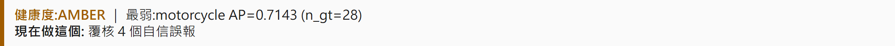

診斷你的模型
vix diagnose —— VIX 最重要、也是新手唯一必學的指令。
這是 VIX 最重要的一個指令,也是新手唯一需要先學會的東西。它把你既有的標籤和你自己的模型串起來,一行就產出弱點報告。Tier A = 離線、免 FiftyOne/DINOv2Tier B = 需 DINOv2 / FiftyOne App
一行指令
vix diagnose ./dataset --labels yolo --weights best.pt --data-yaml data.yaml它依序做了四件事(你不用一步步下指令):
- 匯入你的標籤(
import-labels):用內容雜湊把標籤對到影像(不是用檔名,避免重名出錯)。匯入的標籤標記為「未覆核參照」,永遠不會被當成 golden。 - 跑你的模型(
eval-run):用你的best.pt在這些影像上推論。 - 比對:算出 per-class AP、typed 漏報/誤報、混淆矩陣、最自信卻錯的偵測。
- 寫報告:
weakness_report.md與可瀏覽的.html。
常用選項
| 選項 | 用途 |
|---|---|
--labels yolo|voc|coco | 你的標籤格式(見 輸入格式) |
--weights best.pt | 你的模型(Tier A:算 FP/FN/AP/混淆)。省略則只匯入標籤 |
--data-yaml data.yaml 或 --names a,b,c | YOLO 數字類別 → 可讀類名 |
--json instances.json | COCO 標註檔路徑 |
--audit | Tier B 加做嵌入式標籤稽核 + 失敗歸因(需 DINOv2) |
--out 路徑 | 報告輸出位置(預設 workspace/weakness_report.md) |
你會在終端看到
匯入 133 影像 / 412 框 / 1 類(參照=未覆核標籤)
Tier A 模型評估:mAP@0.5=0.7234 loc_gap=0.04 per-class AP={'pothole': 0.7234}
健康度:AMBER ｜ 最弱:pothole AP=0.72 (n_gt=412)
→ 覆核 12 個自信誤報
報告:.../weakness_report.md(同名 .html 可瀏覽)
下一步(閉環):這是本輪基準(首份或與上次不可比)。**凍結這個 eval set**…
找不到框?若你指到錯的資料夾,VIX 會大聲報錯而不是給你一份假的「全部健康」報告,並告訴你各格式該放哪(yolo:
labels/;voc: annotations/;coco: --json)。你現在應該有:一個
weakness_report.html,最弱的類別排在 per-class 表最上面。接著學怎麼讀它。